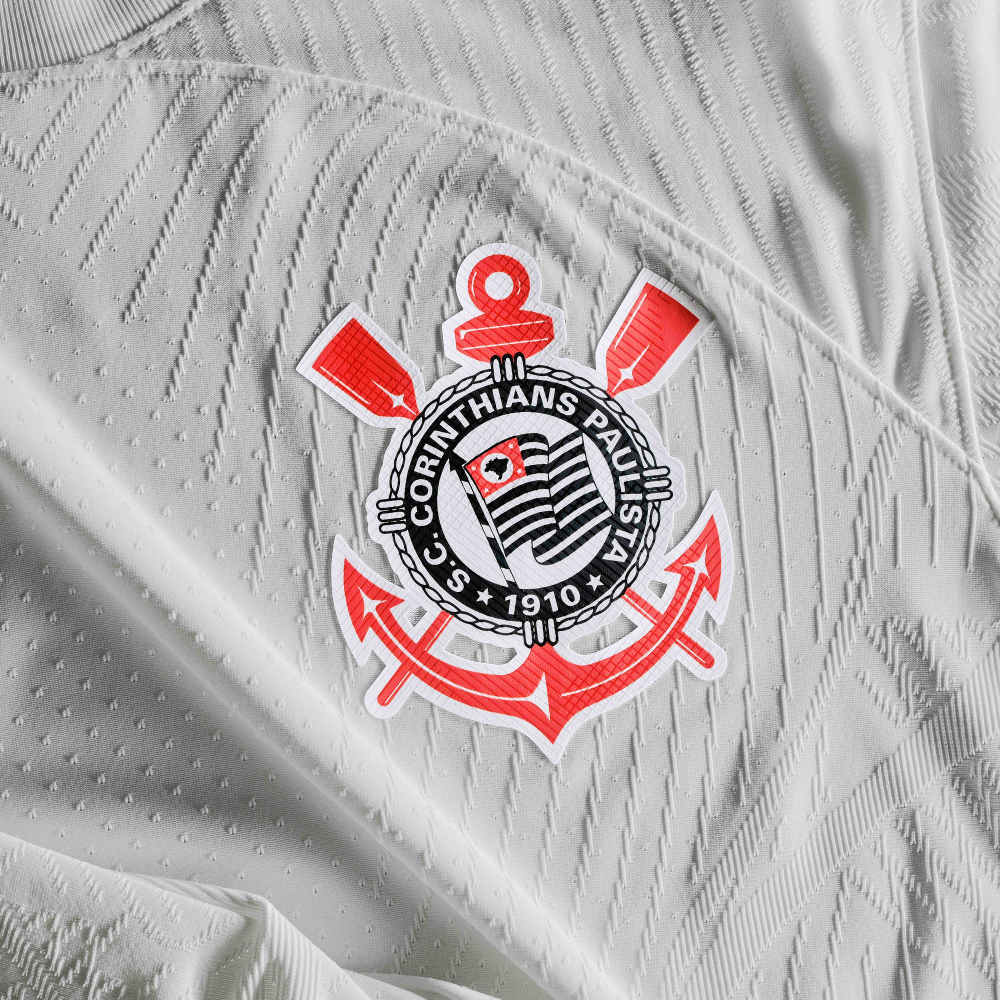

História do Corinthians
Publicado: 03/03/2024

1910 A fundação
Às 20h30 do dia 1º de setembro, à luz de um lampião, na esquina das ruas José Paulino e Cônego Martins, no bairro do Bom Retiro, o grupo de operários formado por Anselmo Corrêa, Antônio Pereira, Carlos Silva, Joaquim Ambrósio e Raphael Perrone fundaram o Sport Club Corinthians Paulista. Com mais oito rapazes, foi formada a reunião dos primeiros integrantes e sócio-fundadores do Timão, que teve seu nome inspirado na equipe inglesa Corinthian-Casuals Football Club, que fazia excursão pelo Brasil. O presidente escolhido por eles foi o alfaiate Miguel Battaglia, que, já no primeiro momento, afirmou: “O Corinthians vai ser o time do povo e o povo é quem vai fazer o time”. Um terreno alugado na Rua José Paulino foi aplainado, virou campo e foi lá que, já no dia 14 de setembro, o primeiro treino foi realizado diante de uma plateia entusiasmada, que garantiu: “Este veio para ficar!”.
1914 O primeiro título
Primeiro título do Sport Club Corinthians Paulista. Com 10 vitórias em 10 jogos disputados, o Timão marcou 37 gols e venceu a última partida por 3 a 0, contra o Lusitano, no Parque Antártica. O atacante Neco foi o artilheiro do torneio com 12 gols. O Alvinegro conquistou o Campeonato Paulista com uma rodada de antecedência. No dia 08 de novembro, a equipe derrotou o Campos Elyseos por 4 a 0 e sagrou-se campeã com a seguinte escalação: Aristides, Fúlvio e Casemiro González; Police, Bianco e César Nunes; Américo, Peres, Amílcar, Apparício e Neco.
Leia mais..
1918 O primeiro estádio
Publicado: 05/09/2023
Em suas horas de folga, os jogadores alvinegros construíram o gramado do primeiro estádio oficial corinthiano. Nomeado como Ponte Grande, a casa do Timão ficava onde hoje é a Ponte das Bandeiras, na Marginal Tietê
Leia mais..
1923 Bicampeonato Paulista
Publicado: 23/11/2022

Pela primeira vez, o clube foi bicampeão paulista. Líder do turno inicial, o time começou o segundo com seis pontos de vantagem e só precisaria vencer três dos sete jogos restantes para levar o caneco.
Leia mais..
2012 O ano inesquecível!
Publicado: 15/10/2022

Pela primeira vez na história, o Corinthians foi campeão da Libertadores. E, para ser perfeito, de forma invicta! Foram 22 gols marcados e apenas quatro sofridos em oito vitórias e seis empates. O atacante Emerson marcou os gols da vitória por 2 a 0 contra o Boca Juniors (ARG) no jogo de volta da grande final. A escalação da partida foi: Cássio, Alessandro, Chicão, Leandro Castán e Fábio Santos; Ralf, Paulinho, Danilo e Alex; Jorge Henrique e Emerson. O gol de cabeça Paulinho contra o Vasco, que levou o Corinthians às semifinais da Libertadores, já é considerado por muitos o mais marcante da história do clube. Além disso, o Timão conquistou a Copinha também de forma invicta e teve um atleta medalhista olímpico em Londres. O nadador Thiago Pereira ficou com a prata nos 400m medley. Em dezembro, o Bando de Loucos invadiu o Japão e viu o Corinthians conquistar o Mundial de Clubes da Fifa pela segunda vez. Guerrero marcou de cabeça e garantiu o título contra o Chelsea no ano que se tornou inesquecível para a Fiel Torcida.
Leia mais..